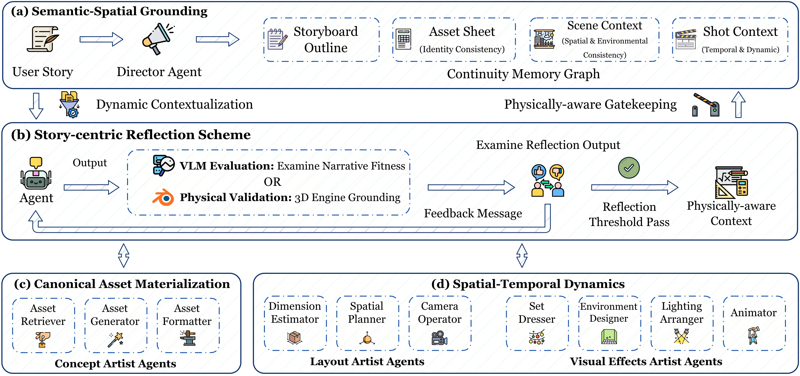

StoryBlender: Inter-Shot Consistent and Editable 3D Storyboard with Spatial-temporal Dynamics
Abstract
Storyboarding is a core skill in visual storytelling for film, animation, and games. However, automating this process requires a system to achieve two properties that current approaches rarely satisfy simultaneously: inter-shot consistency and explicit editability. While 2D diffusion-based generators produce vivid imagery, they often suffer from identity drift along with limited geometric control; conversely, traditional 3D animation workflows are consistent and editable but require expert-heavy, labor-intensive authoring.
We present StoryBlender, a grounded 3D storyboard generation framework governed by a Story-centric Reflection Scheme. At its core, we propose the StoryBlender system, which is built on a three-stage pipeline: (1) Semantic-Spatial Grounding, to construct a continuity memory graph to decouple global assets from shot-specific variables for long-horizon consistency; (2) Canonical Asset Materialization, to instantiate entities in a unified coordinate space to maintain visual identity; and (3) Spatial-Temporal Dynamics, to achieve layout design and cinematic evolution through visual metrics. By orchestrating multiple agents in a hierarchical manner within a verification loop, StoryBlender iteratively self-corrects spatial hallucinations via engine-verified feedback. The resulting native 3D scenes support direct, precise editing of cameras and visual assets while preserving unwavering multi-shot continuity. Experiments demonstrate that StoryBlender significantly improves consistency and editability over both diffusion-based and 3D-grounded baselines.
Method

Hierarchical Multi-Agent Planning Framework. Governed by a Story-centric Reflection Scheme (b), our system utilizes iterative feedback from 3D engines (e.g., Blender) and Vision-Language Models to ensure geometric and narrative consistency. We translate narrative Tstory into 3D storyboards V3D via a three-stage pipeline: (a) Semantic-Spatial Grounding, where the Director Agent decomposes the story into a structured continuity memory graph (Gcm) to ensure precise information flow to downstream agents; (c) Canonical Asset Materialization, which instantiates entities from Gcm to maintain global asset consistency; and (d) Spatial-Temporal Dynamics, which performs spatial layout of assets from memory and enhances cinematic visual effects.
Demo Video
3D animated storyboard shots generated by StoryBlender across multiple stories.
BibTeX
@article{li2025storyblender,
title={StoryBlender: Inter-Shot Consistent and Editable 3D Storyboard with Spatial-temporal Dynamics},
author={Li, Bingliang and Sun, Zhenhong and Bian, Jiaming and Wu, Yuehao and Wang, Yifu and Li, Hongdong and Bian, Yatao and Mo, Huadong and Dong, Daoyi},
year={2025}
}